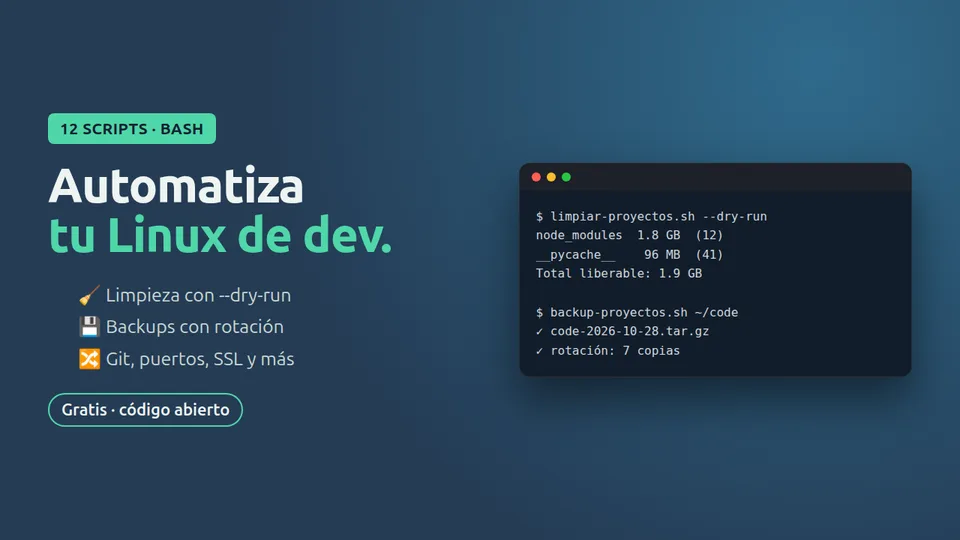

Nuevo Gratis · código abierto · MIT · Scripts
12 scripts Bash para Linux
Scripts seguros y comentados en español: vista previa antes de borrar y confirmación en todo lo destructivo.

El problema
Limpiar node_modules, liberar un puerto ocupado, actualizar tus repos o borrar ramas viejas: tareas pequeñas que repites cada semana copiando comandos de internet, a veces peligrosos. Estos scripts en bash, comentados en español, lo hacen por ti con seguridad: vista previa antes de borrar, dry-run por defecto en las ramas, --help en todos y confirmación antes de cualquier acción destructiva.
Qué incluye
- Limpiar node_modules y cachés (con vista previa)
- Ver y liberar puertos ocupados
- Actualizar todos tus repos con pull --ff-only
- Generar .gitignore sin internet
- Borrar ramas ya fusionadas (dry-run por defecto)
Instálala en un minuto
git clone https://github.com/carlosp5751258-lgtm/ctrlia-scripts-bash.git
cd ctrlia-scripts-bash && chmod +x *.sh
./02-limpiar-caches.sh --helpTodos tienen --help, usan set -euo pipefail y piden confirmación antes de cualquier acción destructiva.
Licencia: MIT · úsala, modifícala y compártela, también en proyectos comerciales.